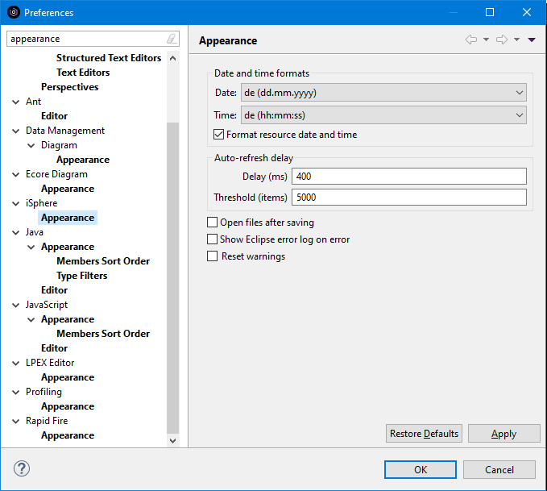

The appearance preference settings configure certain aspects the look & feel of the iSphere
plug-in. Usually there is no need to change anything here, because iSphere adopts the look & feel
of RDi.
The appearance preference settings configure certain aspects the look & feel of the iSphere
plug-in. Usually there is no need to change anything here, because iSphere adopts the look & feel
of RDi.
But if, for example, you run RDi with a different locale as your PC operating system as many German users do, you may want to specify your familiar date and time formats here.

The available options are:
Date and time formats
The options of the Date and time formats group control how date and time values are formatted.
| Date format | - | Specifies the format for displaying date values. With *LOCALE the date format of the current locale is used. |
| Time format | - | Specifies the format for displaying time values. With *LOCALE the time format of the current locale is used. |
| Open files after saving | - | Specifies whether to open files after they have been save. This option is valid for files that are saved to the local PC, such as search results and Excel exports. |
| Show Eclipse error log on error | - | Specifies whether the Eclipse error log is shown, when iSphere encountered an error condition. |
| Reset warnings | - | Resets all messages that had been answered with 'Do not show this message again'. |
Auto-refresh delay
The options of the Auto-refresh delay group control under which conditions auto-refresh is delayed when large tables are filtered by entering values.
| Delay (ms) | - | Specifies the Specifies the delay in milliseconds before a table is refreshed after the last keystroke. A value of 0 disables the auto-refresh delay. |
| Threshold (items) | - | Specifies the number of items a table must contain, before auto-refresh is delayed. |
Affected editors